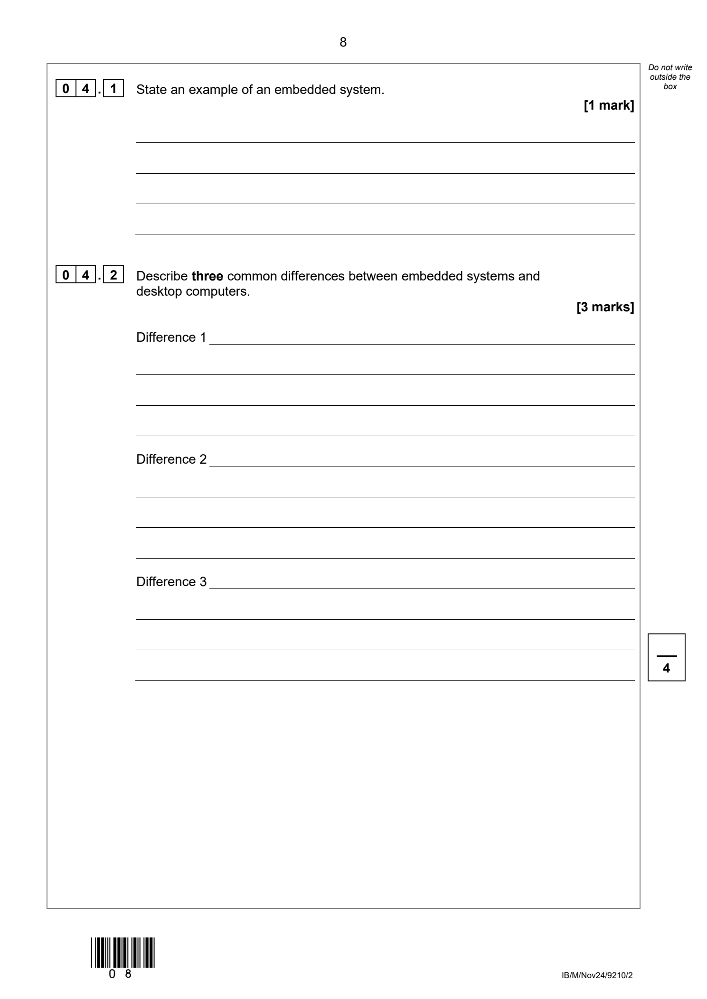
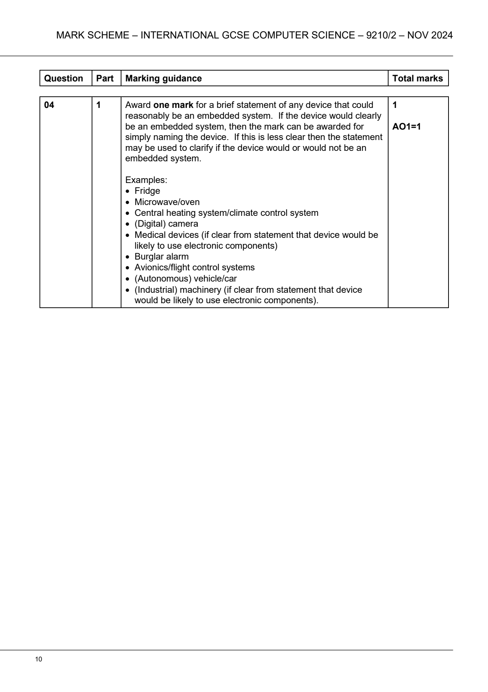
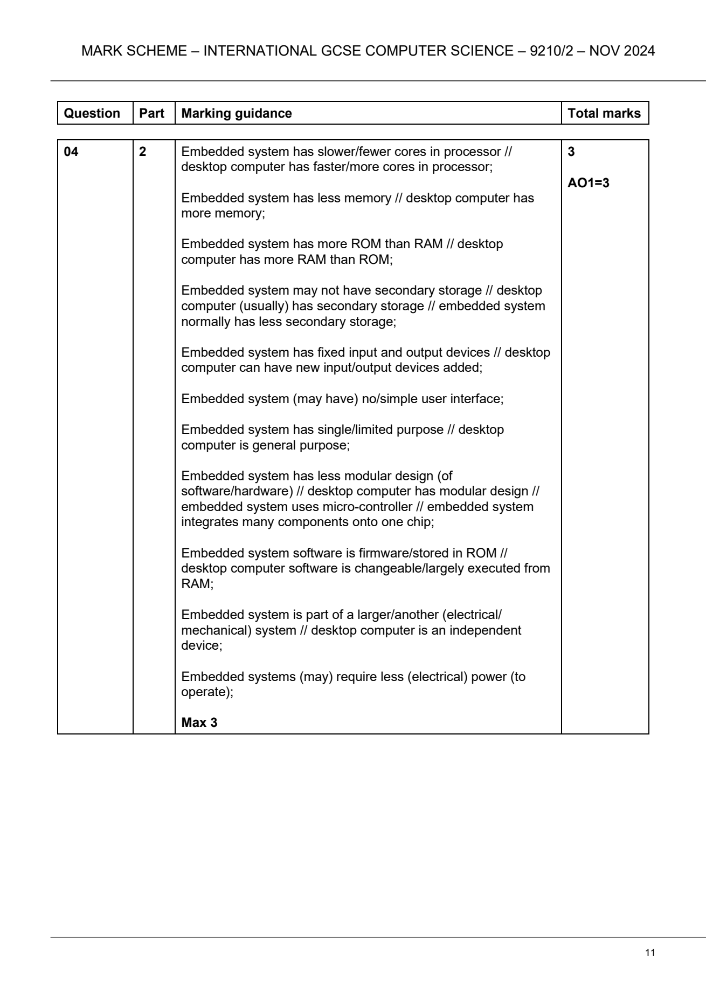

Learn how embedded systems control everyday devices, then prove your
understanding with exact OxfordAQA Paper 2 practice.
Paper 23.4.4 Embedded systemsAO1 + AO2
Interactive lesson
Start your learning record
Your answers save on this device. At the end, download one PDF and
submit it to your Teams assignment.
No account required · Your responses stay in this browser
What are we getting better at?Explaining how embedded systems differ from non-embedded computers.
Saved
00
Lesson map
Embedded systems
60 minutes
OxfordAQA International GCSE Computer Science 9210 · Paper 2 · Specification 3.4.4
By the end of this lesson, you can
Define an embedded system, classify an unfamiliar device and explain three differences from a desktop computer.
Knowledge
Definition, examples and common features of embedded and non-embedded systems.
Skills
Write paired comparisons and apply technical knowledge to an unfamiliar scenario.
Understanding
Explain why purpose, position, resources and flexibility determine the system type.
Retrieve5 min
Record what you already think.
Model14 min
Study a worked embedded controller.
Apply14 min
Reason about an unfamiliar system.
Exam10 min
Complete exact November 2024 practice.
Reflect5 min
Prove transfer in the exit ticket.
Begin with your own ideas. Guidance remains hidden until you attempt the questions.
01
Do Now · 5 minutes
Find the hidden computers
Retrieve · Predict
Look for devices that sense, process or control something, even when they do not resemble a desktop computer.
Work from memory: do not search or use the textbook yet. These answers establish your starting point.
1Name three objects in the image that probably contain embedded computer systems.Identify
2Which object is the clearest general-purpose computer?Choose
3Suggest one difference between the computer inside the washing machine and the laptop.Compare
Check and correct
Embedded examples
Valid examples include the washing machine, microwave, fridge, thermostat, traffic lights, car and digital camera.
General purpose
The laptop is the clearest answer because it is a standalone system that can run many unrelated applications and use different peripherals.
Comparison
A secure comparison states that the washing-machine controller has a limited washing-related purpose, whereas the laptop is general purpose.
Your initial answer remains preserved in the PDF.
02
Main Activity 1 · 14 minutes
Model the system
AO1 · Know and understand
The embedded controller receives input data, processes it and controls outputs inside the larger machine.
Read before you applyOxfordAQA textbook · printed pages 202–203
What makes a system embedded?
“Embedded systems are computers designed to do one specific task.”
An embedded computer is built into a larger electrical or mechanical product. It regulates or controls that product rather than acting as an independent, general-purpose computer. Its instructions are called firmware and are typically stored in ROM.
Many embedded systems use a microcontroller, which combines the main computer components on one chip. Because the system performs a limited range of related actions, it may use less memory, processing power and electrical power. It may also have a limited user interface and fixed input or output devices.
Exam caution: these are common characteristics, not a rule that every embedded system must be offline or incapable of receiving software updates.
Worked examiner model
Why is a central-heating controller an embedded system?
1
Position: it is built into the larger heating system.
2
Purpose: it monitors and controls temperature rather than running unrelated applications.
3
Mechanism: it reads temperature and user-setting inputs, processes them, then switches the boiler output.
Model answer: The controller is part of the larger central-heating system and has the dedicated purpose of monitoring and controlling temperature. It processes data from a temperature sensor and controls the boiler, rather than operating as a general-purpose computer.
AWrite a precise definition of an embedded system.AO1
BTrace the washing-machine input–process–output cycle.AO1
CSelect the three common characteristics of an embedded system.Objective check
Five-point knowledge check
Your definition identifies a computer system.
It states that the system is part of a larger device or product.
It explains the dedicated or limited purpose.
Your input–process–output example follows the visual accurately.
The correct characteristics are the first three options.
Secure understanding requires the exact three objective choices and at least 4/5 on the self-check.
03
Main Activity 2 · 14 minutes
Apply and compare
AO2 · Apply understanding
Good comparisons name both systems and use a linking word such as “whereas”.
A controller is fitted inside a greenhouse system. It reads temperature, light and soil-moisture sensors. It opens vents, activates a water pump and switches a heater. A manager can view readings using a web dashboard, but cannot install unrelated applications on the controller.
AClassify the greenhouse controller and justify your answer using two pieces of scenario evidence.AO2 · 3 practice points
BExplain three differences between the greenhouse controller and a desktop computer.AO2 · 6 practice points
Write three paired comparisons. For each one, state the embedded feature and the corresponding desktop feature.
Marking guide · 6 comparison points
Classification: embedded system. It forms part of the larger greenhouse-control system and performs a limited set of monitoring and control functions. Web connectivity does not make it general purpose.
Comparisons: award up to two practice points for each complete paired difference. One point identifies a relevant greenhouse-controller feature; the second accurately contrasts the desktop computer. Use purpose, position, resources, I/O, software or upgradeability.
Secure understanding requires the correct classification and at least 5/6 comparison points.
04
Independent exam practice · 10 minutes
November 2024
Paper 2 · AO1 · 4 marks
OxfordAQA International GCSE Computer Science 9210/2 · November 2024 · Question 04 · Original question image

The question is shown exactly as published. Type your answers below so they can be saved and exported.Accessible text version of the question
04.1 State an example of an embedded system. [1 mark]
04.2 Describe three common differences between embedded systems and desktop computers. [3 marks]
04.1
Answer
[1 mark]
04.2
Difference 1
[1 mark]
Difference 2
[1 mark]
Difference 3
[1 mark]
TOTAL: 4
Official November 2024 mark scheme

Question 04.1 · original published mark scheme

Question 04.2 · original published mark scheme
Accessible marking summary
04.1 · 1 mark · AO1
Award one mark for a brief statement of any device that could reasonably be an embedded system. Examples include a fridge, microwave or oven, central-heating or climate-control system, digital camera, suitable medical device, burglar alarm, avionics or flight-control system, vehicle or suitable industrial machinery.
04.2 · 3 marks · AO1
Award one mark for each valid difference, maximum three. Accepted comparisons include:
slower or fewer processor cores versus faster or more cores;
less memory versus more memory;
more ROM than RAM versus more RAM than ROM;
less or no secondary storage versus secondary storage;
fixed I/O versus changeable or additional I/O;
no or simple user interface;
single or limited purpose versus general purpose;
less modular or microcontroller design versus modular design;
firmware stored in ROM versus changeable software;
part of a larger system versus an independent device;
lower electrical-power requirements.
Students reaching 3/4 or 4/4 are recorded as self-marked secure.
05
Extension · if you finish early
Paper 1 controller bridge
Paper 1 · AO3
Teacher-created programming transfer task · not a past-paper question
Heating controller program
Trace, test and correct
The controller should switch the heater on only when the temperature is below the target of 22°C. The condition contains a logic error.
target ← 22
temperature ← INPUT("Temperature")
IF temperature <= target THEN
heater ← TRUE
ELSE
heater ← FALSE
ENDIF
OUTPUT heater
ATrace the current program for the three test values.AO3
Temperature
Current program output
Required output
21
TRUE
22
FALSE
23
FALSE
BWrite the corrected IF condition.AO3
CExplain why 22°C is essential test data for this correction.AO3
Solution
The current outputs are TRUE, TRUE, FALSE.
The corrected condition is IF temperature < target THEN.
22°C tests the boundary where the comparison changes. It exposes the incorrect use of <= because the heater must be off at exactly the target.
This activity is optional and does not reduce the core completion percentage.
06
Plenary · 5 minutes
Transfer to a new device
Paper 2 · AO2
Unfamiliar exit ticket
A farm irrigation controller reads soil-moisture sensors, opens water valves and sends readings to a phone app.
Explain why it contains an embedded system and give one relevant difference from a laptop computer.
A secure response explains:
the controller is part of the larger irrigation system;
it has the limited purpose of monitoring soil and controlling watering;
its sensors and valves are relevant inputs and outputs;
the phone connection does not make it a general-purpose computer, or it gives one accurate paired laptop comparison.
Three or four success points records this stage as self-marked secure.
07
Finish & submit
Your learning record
Paper 2 · AO1 + AO2
0%core checked
Complete and check each core stage.
0 of 5 core stages are self-marked secure.
Step 1
Download your PDF learning report
The report separates attempted work, checked work and self-marked security. It preserves your original exam answers and improvements.